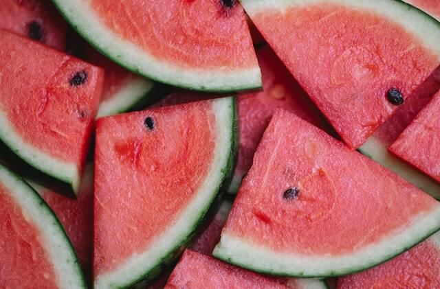
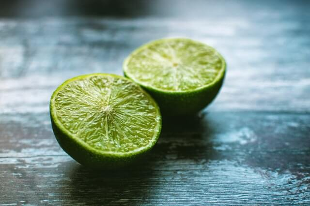
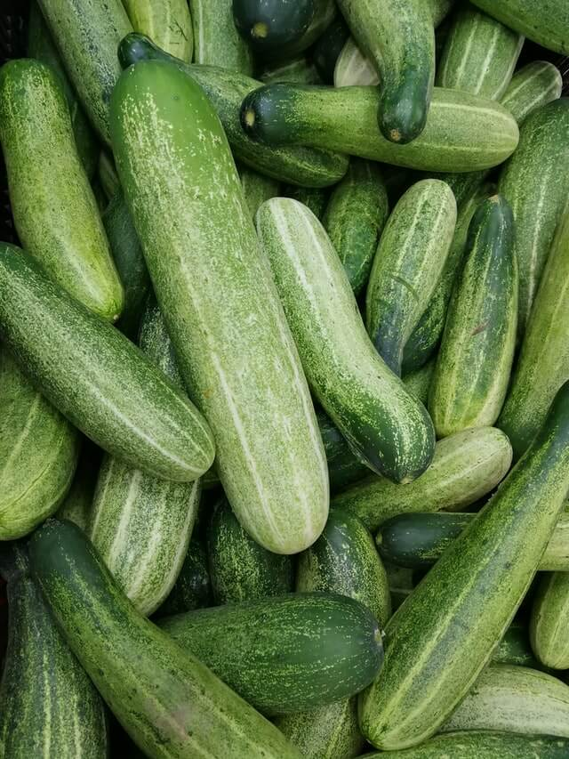
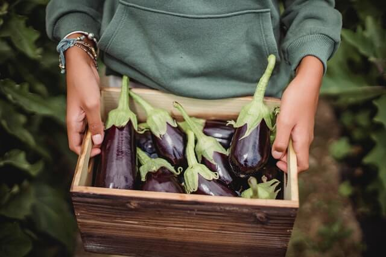
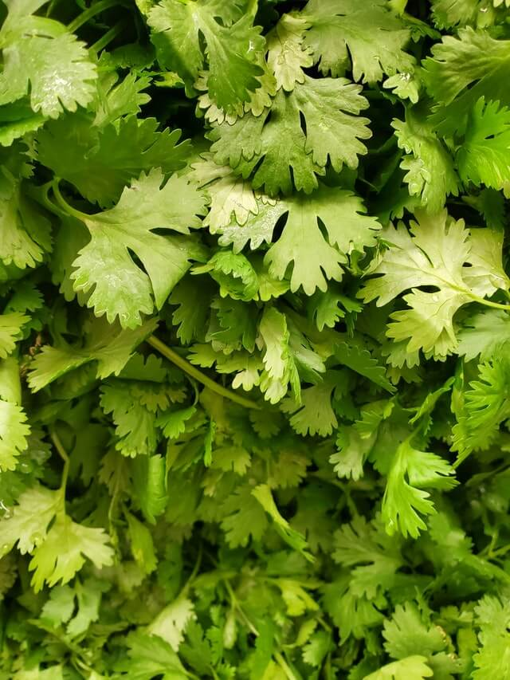
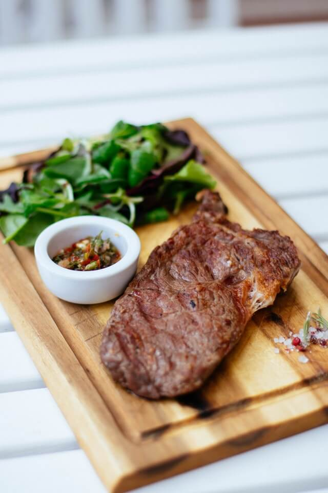

Reto #1
Lista de Supermercado
Frutas:
Sandia

Limones

Vegetales:
Zanahorias
Pepinos

Berenjena

Cilantro

Carnes:
Pollo
Tocineta
Lomo de cerdo

Gracias por visitar
Lista creada por Leonel Lugo